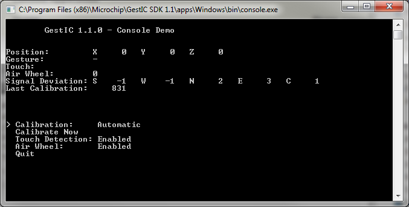

The Console Application retrieves more data than the Stream Examples (Windows/Linux) and allows to trigger a few Real Time Controls.
The source code of the console application is located at apps\Windows\console for the Windows platform and at apps\Linux\console for the Linux platform. apps\Windows\bin contains an compiled executable for the Windows platform.
| Console Application | The Console Application retrieves more data than the Stream Examples (Windows/Linux) and allows to trigger a few Real Time Controls. |
| Usage | Please connect a GestIC device to the machine and terminate all applications using this device before running this application. |
| Implementation | The Windows-version of the console-application uses the functions SetConsoleCursorPosition, _kbhit and _getch to interact with the terminal. |
Please connect a GestIC device to the machine and terminate all applications using this device before running this application.
After starting console.exe you see the following console-window:
In the upper half the current position, detected gestures, signal deviation (SD) data and the count of received updates since the last calibration are shown.
The lower half of the window contains a menu with ‘>’ indicating the currently selected item. Actions could be invoked by pressing Enter and values could be changed by pressing the Left- or the Right-key.
Those are the menu entries:
| Calibration | Whether “Automatic” calibration was enabled or disabled with gestic_set_auto_calibration. When set to “Manual” only calibrations triggered with “Calibrate Now” are performed. |
| Calibrate Now | Invokes a manual recalibration by calling gestic_force_calibration |
| Touch Detection | Allows enabling and disabling of the Touch Detection |
| Air Wheel | Allows enabling and disabling of the Air Wheel Detection |
The Windows-version of the console-application uses the functions SetConsoleCursorPosition, _kbhit and _getch to interact with the terminal. The Linux-version achieves this by using the curses library. The menu-interaction is contained in menu.c.
The interaction with the MGC3130 is contained in gestic.c while main.c initializes both and drives the main-loop.
Enables automatic calibration if enabled is set to a value other than 0.
GESTIC_API int CDECL gestic_set_auto_calibration( gestic_t * gestic, int enabled, int timeout )
Enforces a immediate calibration of the device.
GESTIC_API int CDECL gestic_force_calibration( gestic_t * gestic, int timeout )